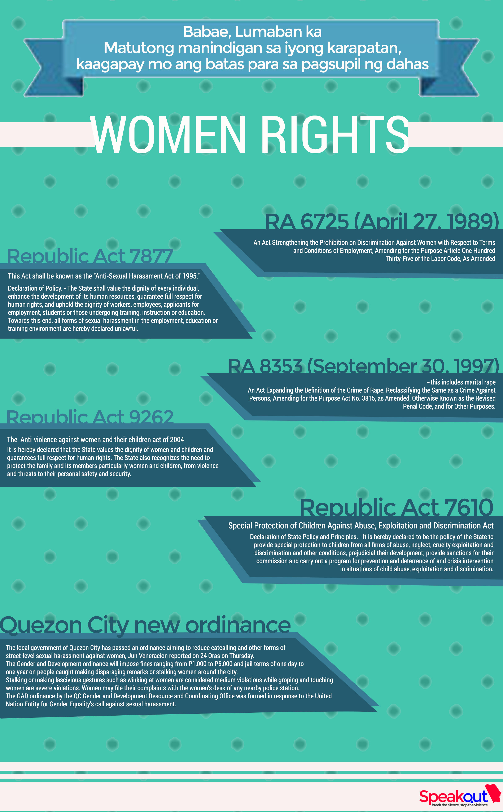

<ion-view view-title="Women Rights">
  <ion-content>
    <ion-item>
      
    </ion-item>
    <ion-item>
      <b>Downloadable Link (More Info)</b>
    </ion-item>
  </ion-content>
  <ion-footer-bar ng-class="{expanded:$scope.isExpanded}">
    <div style="background-color:#0000FF;" class="tabs tabs-icon-top static">
        <!-- <a ui-sref="app.activity" class="tab-item">
            <i class="icon ion-android-locate" ></i> Locate
        </a> -->
        <a style="color:white;" ui-sref="app.locate" class="tab-item">
            <i class="icon ion-android-locate" ></i> Locate
        </a>
        <a style="color:white;" ui-sref="app.feed" class="tab-item">
            <i class="icon ion-earth"></i> Feed
        </a>
        <a style="color:white;" ui-sref="app.Self-Defense" class="tab-item">
          <i class="icon ion-android-hand"></i> Self-Defense
        </a>
    </div>
  </ion-footer-bar>
</ion-view>
